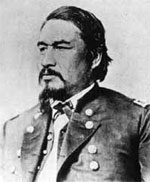

|

|

|
|
|
Seneca Indian chief, adjutant-general in the United States
Army, and Commissioner of Indian Affairs, Ely Samuel Parker
was born in 1828 just outside the Tonawanda Reservation in
New York. Parker attended a Baptist mission school as a
child and later the Yates Cayuga Academies. Parker studied
law, but his lack of citizenship (due to his Native American
heritage) prohibited him from being admitted to the New York
bar.
In 1846, Parker lobbied in Washington, D.C. as a
representative of the Tonawanda Reservation, and in 1851
became a sachem of the Iroquois (Six Nations) Confederacy.
Six years later, he negotiated a treaty that enabled the
Tonawanda Senecas to purchase two-thirds of their
reservation land back from the United States.
When the Civil War began, Parker proposed raising a New
York regiment of Iroquois soldiers and offered his
engineering services to the Union Army. Both offers were
refused. In 1863, he obtained an appointment as a captain
in the U.S. Army and soon served with General Ulysses S.
Grant at the Battle of Vicksburg. Parker later served as
Grant's aide-de-camp during the 1864-1865 campaign against
the Army of Northern Virginia. On April 7, 1865, Parker was
present at the surrender at the Appomattox Courthouse.
After the War, Parker helped negotiate treaties with
several Indian tribes and in 1869 Grant appointed him
Commissioner of the Bureau of Indian Affairs in 1869. He
was the first Native American to hold that office. Parker
shaped the Grant administration's controversial "Peace
Plan," which abolished the treaty system and advocated the
assimilation and Christianization of Native Peoples. In
1871, Parker resigned that commission after being accused of
fraud by the U.S. Senate. He was later exonerated.
Parker moved to Fairfield, Connecticut, where he
struggled as a businessman and investor. His fortune lost
and political connections no longer in power, Parker finally
took a position as a clerk for the New York City Police
Board of Commissions. Parker died on August 30, 1895 of
complications from diabetes.
Source: Joan Waugh, ed., Facts on File Encyclopedia of American
History: Civil War and Reconstruction, 1856 to 1869 (New York: Facts on
File, 2003), 264-265.
|